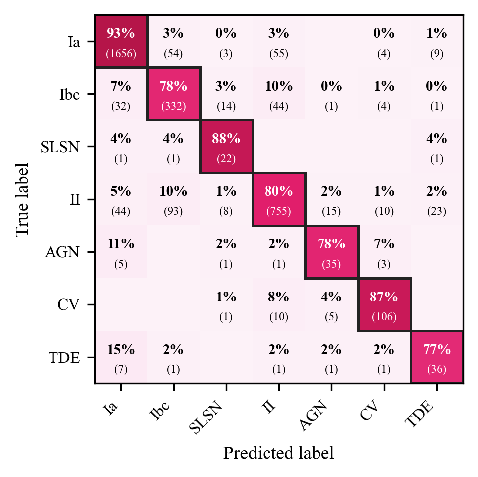
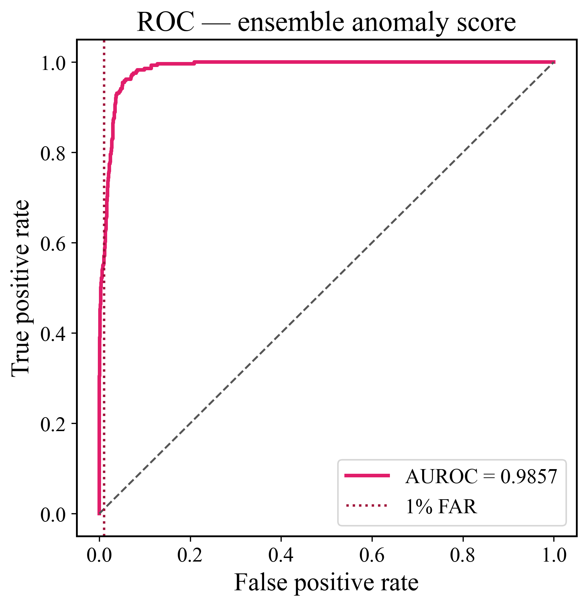
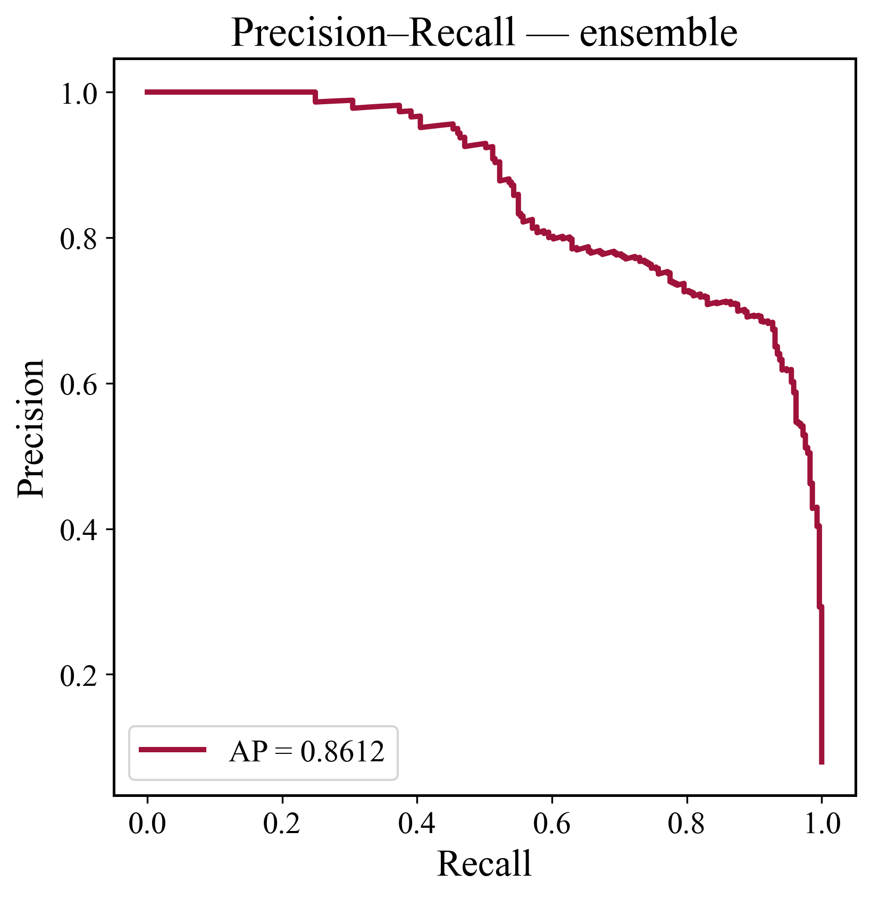
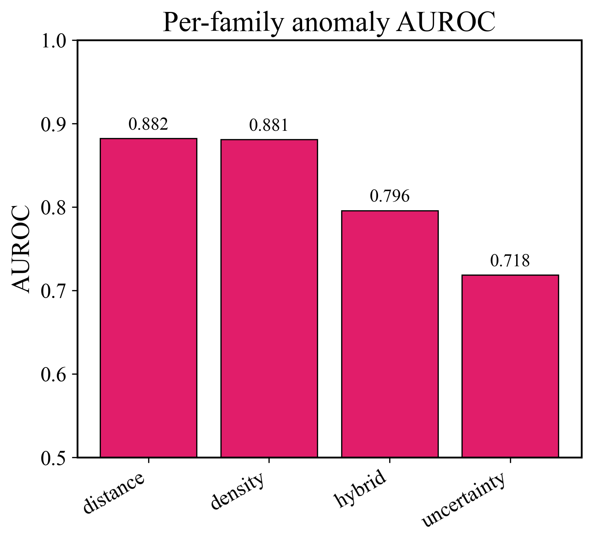
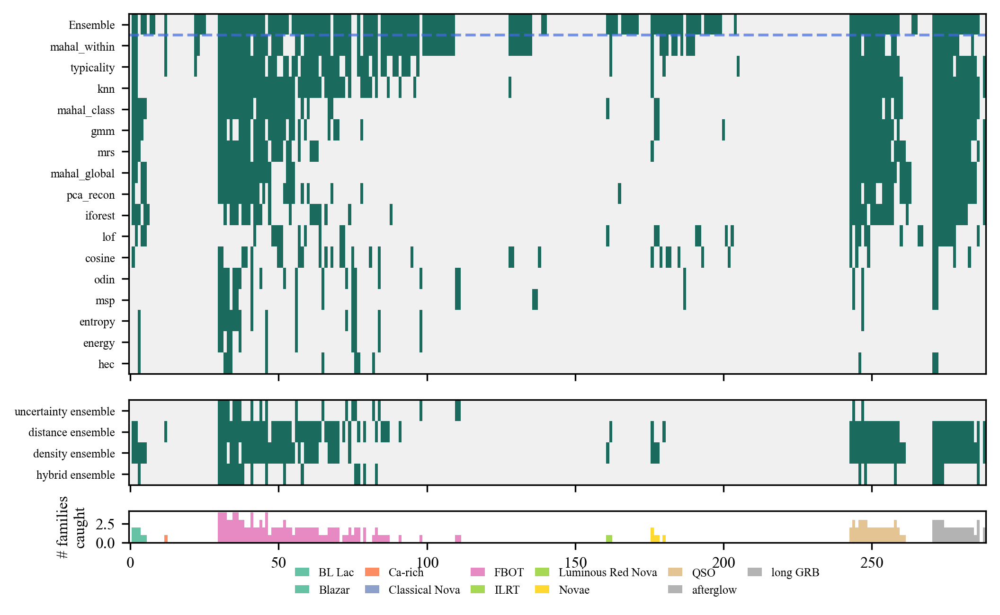
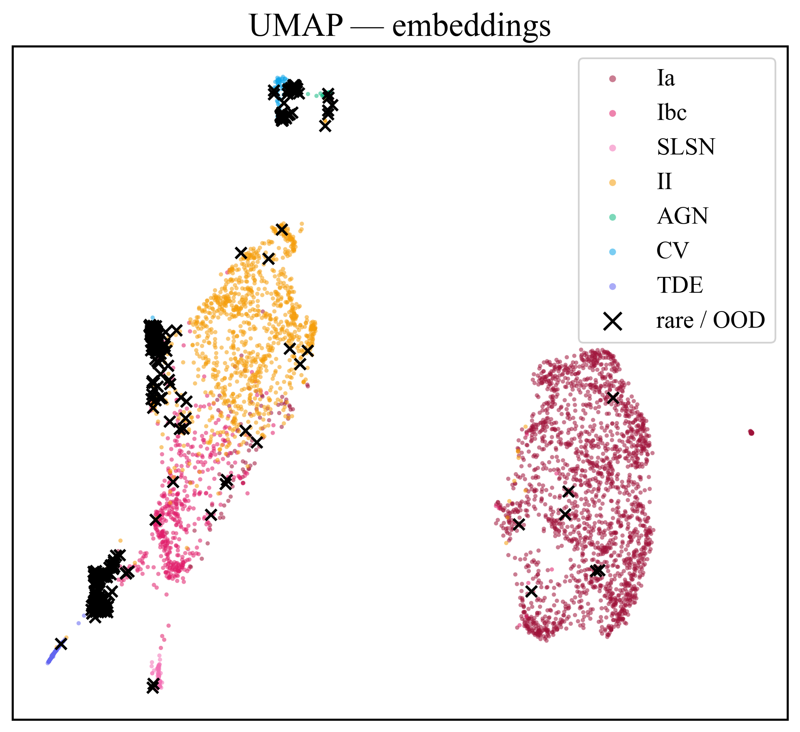

Canonical ensemble: v7fix6 — the same model set is used for every split, so classification, anomaly-detection and conformal numbers all come from one consistent configuration.
| spec | n_models | ad_auroc | recovery_at_far | union_or | oof_auroc | test_acc | test_macro |
|---|---|---|---|---|---|---|---|
| 6model | 6 | 0.989933 | 0.698962 | 0.581315 | 0.997033 | 0.875679 | 0.822969 |
| 7model | 7 | 0.988447 | 0.657439 | 0.602076 | NaN | 0.872360 | 0.823148 |






| obj_id | true_class | pred_class | confidence | ens_score | flagged | flag_uncertainty | flag_distance | flag_density | flag_hybrid | n_families_caught | score_msp | score_entropy | score_energy | score_odin | score_mahal_global | score_mahal_class | score_mahal_within | score_knn | score_cosine | score_typicality | score_gmm | score_iforest | score_lof | score_pca_recon | score_hec | score_mrs |
|---|---|---|---|---|---|---|---|---|---|---|---|---|---|---|---|---|---|---|---|---|---|---|---|---|---|---|
| ZTF19abdjzbf | QSO | CV | 0.771 | 0.9913 | True | False | True | True | False | 2 | -0.771 | 0.880 | -3.092 | -0.571 | 21.467 | 27.186 | 54.800 | 11.827 | 0.197 | 1.439 | 93.355 | 0.573 | 2.510 | 24.508 | 1.065 | 8.437 |
| ZTF21aayokph | afterglow | CV | 0.825 | 0.9907 | True | False | True | True | False | 2 | -0.825 | 0.663 | -3.505 | -0.643 | 20.408 | 27.575 | 60.866 | 11.087 | 0.159 | 1.244 | 83.097 | 0.538 | 2.993 | 28.559 | 0.974 | 8.859 |
| ZTF26aaglqak | FBOT | CV | 0.774 | 0.9907 | True | False | True | True | False | 2 | -0.774 | 0.818 | -3.240 | -0.588 | 16.585 | 21.770 | 54.606 | 10.222 | 0.138 | 1.210 | 82.901 | 0.513 | 2.759 | 17.222 | 1.034 | 7.411 |
| ZTF24aaifrpx | QSO | CV | 0.464 | 0.9903 | True | False | True | True | False | 2 | -0.464 | 1.412 | -2.732 | -0.360 | 19.081 | 26.431 | 58.637 | 11.601 | 0.146 | 1.386 | 75.826 | 0.490 | 1.809 | 25.314 | 1.694 | 9.195 |
| ZTF26aaglqak | FBOT | CV | 0.817 | 0.9901 | True | False | True | True | False | 2 | -0.817 | 0.718 | -3.362 | -0.626 | 16.718 | 23.414 | 54.462 | 10.228 | 0.204 | 1.174 | 82.608 | 0.513 | 2.768 | 17.208 | 0.943 | 8.100 |
| ZTF24abjjpbo | FBOT | CV | 0.857 | 0.9901 | True | False | False | False | False | 0 | -0.857 | 0.638 | -3.371 | -0.656 | 12.949 | 18.085 | 45.546 | 9.556 | 0.145 | 1.151 | 65.630 | 0.491 | 1.535 | 8.308 | 0.855 | 6.317 |
| ZTF26aaglqak | FBOT | CV | 0.828 | 0.9900 | True | False | True | True | False | 2 | -0.828 | 0.715 | -3.181 | -0.628 | 17.105 | 23.554 | 54.227 | 9.978 | 0.141 | 1.194 | 76.215 | 0.496 | 1.733 | 18.433 | 0.970 | 7.284 |
| ZTF20aafdzfo | QSO | CV | 0.361 | 0.9896 | True | False | True | True | False | 2 | -0.361 | 1.399 | -2.628 | -0.307 | 20.051 | 21.687 | 70.672 | 9.938 | 0.100 | 1.605 | 75.908 | 0.551 | 1.321 | 22.224 | 1.969 | 7.106 |
| ZTF20aafdzfo | QSO | CV | 0.428 | 0.9896 | True | False | True | True | False | 2 | -0.428 | 1.376 | -2.638 | -0.345 | 20.803 | 22.590 | 71.320 | 10.170 | 0.111 | 1.611 | 81.168 | 0.558 | 1.326 | 22.857 | 1.870 | 7.252 |
| ZTF18aavrjbx | Blazar | CV | 0.509 | 0.9896 | True | False | True | True | False | 2 | -0.509 | 1.382 | -2.733 | -0.384 | 19.720 | 25.930 | 59.542 | 11.116 | 0.086 | 1.501 | 79.198 | 0.531 | 1.884 | 18.935 | 1.609 | 8.738 |
| ZTF20aafdzfo | QSO | CV | 0.545 | 0.9892 | True | False | True | True | False | 2 | -0.545 | 1.216 | -2.786 | -0.420 | 22.054 | 25.671 | 66.628 | 10.998 | 0.096 | 1.477 | 92.373 | 0.547 | 1.546 | 25.618 | 1.516 | 7.666 |
| ZTF20aafdzfo | QSO | CV | 0.416 | 0.9891 | True | False | True | True | True | 3 | -0.416 | 1.332 | -2.796 | -0.343 | 19.107 | 25.366 | 67.491 | 10.250 | 0.084 | 1.506 | 68.473 | 0.523 | 1.408 | 18.823 | 2.073 | 7.778 |
| ZTF20aafdzfo | QSO | CV | 0.330 | 0.9891 | True | True | True | True | False | 3 | -0.330 | 1.500 | -2.492 | -0.280 | 22.362 | 28.362 | 75.702 | 11.298 | 0.111 | 1.670 | 93.803 | 0.554 | 1.516 | 23.599 | 1.891 | 8.053 |
| ZTF20abcztsu | Blazar | CV | 0.556 | 0.9891 | True | False | True | True | False | 2 | -0.556 | 1.284 | -2.715 | -0.416 | 21.901 | 28.649 | 71.989 | 11.818 | 0.132 | 1.536 | 95.605 | 0.542 | 1.486 | 24.363 | 1.662 | 9.001 |
| ZTF20aafdzfo | QSO | CV | 0.533 | 0.9891 | True | False | True | True | False | 2 | -0.533 | 1.233 | -2.814 | -0.413 | 21.465 | 28.620 | 65.206 | 11.474 | 0.122 | 1.374 | 76.860 | 0.553 | 1.698 | 26.292 | 1.790 | 8.840 |
Generated by pipelines/build_site.py.
Models & caches are git-ignored; regenerate with bash run_all.sh.